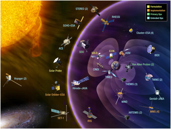
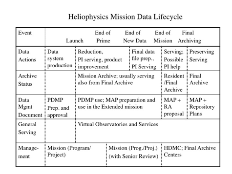

NASA Heliophysics Science Data Management Policy
Version 1.2
04 October 2016
Change Log
6/25/07 Release of version 1.0
4/12/09 Version 1.1 released, with the following changes:
Fig. 1 changed to reflect Final Archives and HDMC
Replaced Appendix F on Resident Archives with a more general Appendix F dealing with Mission, Resident, and Final Archives, and with general Trustworthy Archive guidelines.
Added Appendix G, the charter for the Heliophysics Data and Model Consortium, and text in the Introduction and Section 2.3 describing the HDMC briefly.
Revisions made in various sections to change the emphasis from “permanent archives” to what are defined in the new Appendix F as “Final Archives.”
Modified the Introduction and Sections 2 and 3 to reflect the archive architecture of Appendix F, especially with regard to the roles of NASA Data Centers.
Modified Section 5 considerably in light of the new Appendix F.
10/4/16 Version 1.2 released with the following changes:
Modified many sections (mainly 2.3 and 4) to reflect the focus on consolidation of the VxO activities into “VHSO,” i.e., a more unified approach emphasizing standards for description, formatting, and access, rather than portals. This emphasizes interaction between providers and users with a basic infrastructure group (HP Data Centers and an associated HDMC group) rather than VxOs. Related to these issues, data formats for HP are prescribed in Section 4.
Text changed in various sections (mainly 2.4, 3, and Appendix F) to deemphasize the role of RAs as these have become less necessary as Mission data is increasingly going directly to Final Archives.
The discussion of the role of NSSDC, now a Planetary Physics archive, is reduced accordingly (Section 2.5 and Appendix G).
Figure
1, the executive summary, and various paragraphs throughout changed slightly to
reflect the above changes.

To: The Heliophysics Community
The Heliophysics Science Data Management Policy serves to bring order to the Heliophysics Data Environment (HPDE) that is the public face of NASA’s Heliophyscis System Observatory. This policy provides a blueprint for the HPDE, tracing the data lifecycle from measurements to final archives. Our new environment, in which data are efficiently described and served in a uniform way from distributed active archives, provides the infrastructure needed to achieve our scientific goals and objectives. Multi-instrument and multi-mission studies of the Sun and its effects on the heliosphere and on the magnetospheres and ionospheres of the planets in our solar system are facilitated by the approach presented here, thus enabling the approach to resolve the next generation of Heliophysics science problems, including the understanding needed for robust space weather prediction and the related exploration of our solar system. The integration of model results with observational data, essential to fundamental understanding, is becoming more routine, and will be an important thrust of ongoing work.
This data policy is vital to our research community and it incorporates the community’s continued input. This is a living document, to be modified as needed, as our science program evolves. We welcome your feedback, as only through such interaction will the HPDE continue to be responsive to community needs.
Steven W. Clarke
Director, Heliophyics Division
Contents
Executive Summary
1. Introduction, Purpose, and Scope
2. The Components of the Data Environment and their Roles
2.1 Heliophysics Division Overview
2.2 Spaceflight Projects
2.3 The Heliophysics Data and Model Consortium (HDMC): Uniform Standards
2.4 Resident and Final Archives
2.5 NASA Data and Modeling Centers
2.6 NASA HQ, HQ Program Offices, and Program Scientist
2.7 HP Data and Computing Working Group
2.8 Heliophysics Community: NRA- and Contract-Based Work
3. The Mission/Data/Review Lifecycle
4. The Role of Standards: Formats, Data Model
5. Final Archiving and Continued Serving of Data
6. Plans for HP Science Data Management Policy Review and Revision
References
Appendix A: The Heliophysics Data Environment Rules of the Road
Appendix B: A Framework for Space and Solar Physics Virtual Observatories (Executive Summary)
Appendix C: A Space and Solar Physics Data Model from the SPASE Consortium (Executive Summary)
Appendix D: Project Data Management Plans
Appendix E: Mission Archive Plans
Appendix F: Archiving in the Heliophysics Data Environment
F.1 Archives (Repositories) and Archival Resources
F.2 Mission, Resident and Final Archives
F.3 Deep Archives and “Level-Zero” Data
F.4 Functions and Guidelines for a Trustworthy
Archive
Appendix G: Heliophysics Data and Model Consortium (HDMC) Charter
Figure 1: Heliophysics Mission Data Lifecycle
Executive Summary
Heliophysics (HP) research seeks to determine and model the nature and dynamical interactions of the Sun, the heliosphere, and the plasma environments of the Earth and planets based on data from the fleet of spacecraft and related ground-based assets collectively termed the “Heliophysics System Observatory.” Achieving the desired understanding requires easy access to data and tools from a distributed set of archives that actively deliver data, each of which has its own architecture and formats. This document provides HP policy and guidelines for preparing, accessing, using, and archiving HP data throughout its lifetime. The basic principles for the “Heliophysics Data Environment (DE)” (the collective set of HP data and related documentation, tools, and services; see http://hpde.gsfc.nasa.gov) are the involvement of scientists in each stage of the process, and the acceptance of the goal of openly accessible data that are independently scientifically usable. The data environment described here is guided by a “top-down” vision provided by NASA Headquarters (HQ) with community input, but it is implemented from the bottom up, built from peer-reviewed data systems driven by community needs and founded on community-based standards. Consistent with this approach, data providers and data users share responsibility for the quality and proper use of the data for research.
Spaceflight projects (“missions”) are the core of the Heliophysics Data Environment (HPDE). The proposals for these define the science goals that determine the required data products. The production and serving of the data from missions is governed by the Project Data Management Plan (PDMP) until after the termination of the active phase of a mission. A Mission Archive Plan, initially formulated at the first Senior Review for an extended mission and in effect until the mission’s end, will guide the preparation of lasting data products. After a mission ends, its data may remain accessible for a time through a Resident Archive that maintains easy access to data and to expertise for its use, but more commonly the data will already reside in and be served by a NASA Final Archive. Final archiving, with continued access but detailed science support mainly through community contacts, is a natural endpoint in the data cycle.
The data from missions is to be made available through web-site access and via more direct connections to user applications using web services. The latter access can be (and often is) provided by working with the Final Archives to use standard formatting and hosting. This architecture allows uniform data access, either through applications such as “IDL” or custom “Virtual Observatories” (VOs), built as needed to provide one-stop access to data from many missions; either route can give scientists the ability to apply user- or community-developed tools for cross-mission analysis and visualization. NASA HQ will provide the vision for the HPDE and ensure, with community input from the Heliophysics Data and Computing Working Group (HPDCWG) and Senior Reviews of both missions and Data Centers, that the vision is carried out. NASA Data Centers will provide various services, including archives and cross-disciplinary access to data and services, and coordination with VOs and other HPDE components. All components of the HPDE will involve competitive selections and reviews to ensure the best quality.
This document provides an overview of the components of the HPDE and their relationships, a timeline of significant events in the data lifecycle, guidelines for the preparation of Project Data Management Plans and Mission Archive Plans, guidelines for the long-term serving and archiving of data, and a plan for keeping this Data Policy updated in light of changing technology and community needs. The document is intended for all those who deal with Heliophysics data including people developing or managing missions, anyone providing or serving Heliophysics data (such as missions, virtual observatories, and data centers), those proposing for missions or data environment components, and users of the data.
1. Introduction, Purpose, and Scope
NASA’s Science Mission Directorate conducts scientific exploration that is enabled by access to space [1]. The NASA Strategic Objective for Heliophysics, in particular, is to “explore the Sun-Earth system to understand the Sun and its effects on Earth, on the Solar System, and on the space environment conditions that will be experienced by explorers, and demonstrate technologies that can improve future operational systems” [2]. Our solar system is governed by the Sun through gravity, radiation, and through streams and gusts of solar wind and magnetic fields that interact with the fields and atmospheres of planetary bodies. The space weather produced by the solar effects is seen, among other places, in effects on radio and radar transmissions, electrical power grids, and the electronics and sensitive materials of spacecraft. Heliophysics seeks to understand how and why the Sun varies, how planetary systems respond, and how human activities are affected. As we reach beyond the confines of Earth, this science will enable the space weather predictions necessary to safeguard the outward journey of human and robotic explorers.
A key step toward the goals of the Heliophysics missions is the production and analysis of high-quality data from space platforms. This is no longer a matter of a PI team executing an experiment in space; our research goals now require an integration of data from the many instruments and missions comprising the Heliophysics System Observatory as well as complementary sources of data used to perform Heliophysics research. The success of this effort depends on having scientific involvement in all stages [3, 4] of data production, dissemination, and archiving, with a close collaboration between scientific and technical teams. Two overarching principles also essential to achieving the goals of current Heliophysics programs are:
This view involves the data users from the general science community as responsible partners in the improvement of the data environment and of the data products themselves, as detailed in the Heliophysics Data Environment Rules of the Road (Appendix A). To ensure responsiveness to the community and high quality, all aspects of the HPDE will involve competition through proposals or periodic reviews that include both quality assessment and consideration of plans for and the use of community feedback, and thus the HPDE is “market-driven.”
The data lifecycle for Heliophysics missions envisioned here starts with the science goals for a new mission. These goals yield a set of constraints on what quantities need to be measured and at what sensitivity and resolution to answer the questions posed. The measurements are embodied in a set of data products, first articulated in the mission proposal, and later made more precise in the PDMP that forms the basis for data gathering, reduction, and serving for the active mission. In the early phases of an active mission, data reduction routines may change continually, and the best products may only be produced for time intervals of high interest. The experience gained here leads to the ability to routinely produce high-quality, carefully documented data, served to the community using easily understood formats and delivery mechanisms. As the mission ages, and especially in the extended phase, usage typically decreases and the argument for further data refinement becomes less compelling. At this stage, a Mission Archive Plan will guide the preparation of a final set of best products and documentation that will continue to serve the community well beyond the end of the mission. The maintenance and serving of the mission archive past mission termination can be performed by a “Resident Archive” (RA) associated with mission data experts, but it is now becoming standard that missions deliver their data to Heliophysics Final Archives much earlier, even as data are initially made public. Serving the datasets through an RA may still be useful for a while, but there must be a clear scientific reason for this, and experience has shown that RAs make it difficult to assure quality archiving and to provide uniformity of data access. It is likely that RAs have primarily served as a stopgap while HP archiving became better established.
Technological advances and increasing data volumes lead
naturally to having a distributed data environment, with many remote data
archives at provider and other archive sites linked through software services
known as Virtual Observatories (VOs).
The VOs do not replace the primary repositories, but they enhance the ability to obtain and use data
efficiently across a broad range of observatories, instruments, and data
formats. The uniform
infrastructure required for VOs, including uniformity of product descriptions,
formats, and access methods, will allow scientists to access data from many
missions from one Web location, or, in a mode that has become quite common from
their own software applications directly via “web services.”
The use of internet-based services founded on
community-evolved practices and standards allows for a “bottom-up”
implementation of specific, peer-reviewed VOs and other services all working
toward a “top-down” vision provided by NASA HQ with community input. To be effective, the HPDE must work
cohesively with the data providers and users to establish and maintain
standards that allow effective communication and interoperability. Traditionally, collaboration with other
nations and agencies has fostered the inclusion of essential non-NASA holdings
in the Heliophysics Data Environment, and NASA Heliophysics will continue to
encourage such interactions. To
facilitate the integration of VO and archival efforts, as well as to make
dealings with other organizations easier, NASA Heliophysics has instituted the
Heliophysics Data and Model Consortium (HDMC), described in more detail
below.
The purpose of this document is to present the HP Science Data Management Policy, which is based on the above principles and overview. This policy describes the philosophy for science data management for the science programs sponsored by NASA’s HP Division, and its scope encompasses all phases of the mission and data life cycles. In particular, it provides:
2. The Components of the Data Environment and their Roles
The HPDE is that portion of NASA’s HP Division concerned with the processing, serving, storing, and preserving of data and associated data analysis tools from HP missions and the broader HP community. It will increasingly involve both web services and the “data” produced by models, which is also essential to the HP goals outlined above, but this will not be the main focus of this document. This section provides an overview of the relevant HP components and their role in the data environment.
2.1 Heliophysics Division Overview
As stated in the Heliophysics Roadmap [2], the HP division endeavor relies on a number of major mission programs. The Solar Terrestrial Probes focus primarily on fundamental science questions. Living With a Star missions and partnerships target knowledge of processes that directly affect life and society. The flexible Explorer program provides an efficient means of achieving urgent strategic goals that is responsive to new knowledge, technology and priorities. Challenging strategic and partnership missions address important goals that cannot be funded in the baseline program. Complementary to the missions, scientific research programs provide data analysis and theory to understand the data from the missions as well as rapid access to space measurements through the sounding rocket and balloon programs.
The remainder of Section 2 spells out the specific components of the HPDE and their roles and responsibilities in enabling the data flowing from the above missions to be used effectively for scientific research.
2.2 Spaceflight
Projects
Spaceflight projects (“missions”) are the core of the HPDE, as the providers of the data that lead to understanding. The missions should manage data so as to facilitate achievement of the mission’s science goals. For the success of the DE, missions must provide open community access to the products an services required to attain the science goals of the proposed mission as soon as practicable, as well as to higher-level data products. This should be through an active archive of the mission’s design, made to be compatible with the overall HPDE framework.
Each mission is expected to manage its own data and systems; this may be done using their own “in house” systems, or in collaboration with other data systems or centers. The creation and maintenance of the data archive will be the responsibility of each mission during the prime mission phase (Phase E). The assignment of maintenance responsibilities to the mission elements (including instrument teams) will be chosen to promote efficient processing and distribution of science data as a means of meeting the mission’s Level-1 requirements. These assignments are made early in the mission’s development and documented in the Project Data Management Plan (PDMP). Missions are required to create and provide access to supporting material (documentation, software) required to ensure independent data usability.
Missions should adhere to existing data and metadata standards. (See the note on standards below.) These standards can evolve over the life of the mission. Furthermore, the uses of the data evolve as the mission matures. The underlying information technology that hosts a mission’s data environment sometimes evolves in ways not envisioned during a mission’s development phases. The evolved mission data system will be captured by creating, in time for the first Senior Review for an extended mission, a Mission Archive Plan (MAP) and adhering to it thereafter. The MAP focuses on the content of the data and metadata files at the end of the mission. The MAP will depict the status of the mission’s science data (science quality, documentation, formats, standards, and essential data analysis tools) with respect to the mission’s planned archival science data. The MAP should show the path to creating the mission’s Final Archive(s) (Appendix F). The MAP will be updated as the mission progresses into and through its extended mission phase. The MAP review will include an assessment of the adequacy and appropriateness of the planned data products and proposed archival transition.
2.3 The Heliophysics Data and Model Consortium (HDMC): Uniform
Standards
The idea of Virtual Observatories (VOs) started as a “Digital Sky” project intended to give astronomers searchable, virtual (electronic) access to all observations of any region in all wavelengths through the use of the Internet to reach archives of data located worldwide. This project became the National Virtual Observatory (now the Virtual Astronomical Observatory) in the US, and the International Virtual Observatory Alliance worldwide. Solar and space physics are now embarking on a similar unification of access to the HP System Observatory spacecraft and ground-based instruments. As in other fields, the HP VOs are primarily intended to provide simple, uniform access to data from distributed, heterogeneous sources, but they will also enable services, such as visualization or format translation, that enhance the use of these data.
Accomplishing this unification requires a coordinated effort to link data and service providers to scientific users using standardized resource descriptions and access protocols to give a uniform face to an underlying heterogeneous and distributed set of resources. The set of standards and the software services that accomplish this task of linking users to data and services have now become generally known as VOs. The VOs do not typically hold data, but constructing VOs requires strong interaction with data providers to achieve the desired VO goal of uniform descriptions of data products and seamless access to them. The access to products may involve the development of visualization and query services beyond those needed for basic browse and access, but the primary goal is to make the data from many sources easily found and available in convenient form for scientific use. Appendix B presents the Executive Summary of a community-based defining document for VOs, along with a link to the full document.
Apart from the Virtual Solar Observatory, which resulted from a Data Center Senior Review, the HP VOs were initiated through calls in the annual Research Opportunities in Space and Earth Sciences (ROSES) solicitations for discipline specific VxOs (e.g., x = M for Magnetospheric or S for Solar); these proposals defined the scope of each effort. Having VxOs provided broad, systematic input into a community-wide data model (the “SPASE” Data Model; see below, Appendix C, and www.spase-group.org) that provides a basic set of uniform terms to describe data products and related resources to enable interoperability. The VxOs provided considerable experience in how to accomplish VO tasks; further development will integrate these efforts to eliminate duplication and increase efficiency.
To oversee the VO development and to facilitate the
integration of the VO infrastructure and archives into a uniform data system,
HP has formed the Heliophysics Data and Model Consortium (HDMC; Appendix
G). This project functions in
parallel with the NASA Data Centers (see 2.5 below). The HDMC is led by a
Project Scientist who works with HQ in designing the overall project, and also deals
with the logistics of funding grants for the VOs, Resident Archives, and other
related activities such as data upgrades.
The HDMC oversees the VO and related value-added services, and will work
closely with the Final Archives in monitoring RAs and data upgrades. The HDMC is subject to the same Senior
Review as the HP Data and Computing Centers. This review provides the mechanism
for continuity for data access and archive functions within the HPDE.
2.4 Resident and Final Archives
The data from a mission are often of continuing interest long after the mission has ceased actively collecting data. In most cases, mission data will be served from a Final Archive well before the end of the mission. In any case, formalizing the post-mission phase will allow for a smooth transition to a useful final archiving of data products. Thus, the role of an RA, should it be needed, will be to continue the mission role of securely holding and serving data, and providing support to the community for the data use. RAs are described in more detail in Appendix F. Experience with RAs has shown them to be effective at continuing the serving of the data, but as missions have begun to deliver their data earlier in the mission to Final Archives, the need for RAs has decreased. RAs are set up though a standard NRA proposal process.
When an RA has been used to serve mission data but is no longer deemed necessary, either through its own self-evaluation or by a proposal review, the basic set of calibrated, easily-read, well-documented files that represent the legacy of the mission will pass to a Final Archive. The Final Archive will not offer the level of expert assistance that was provided by an RA, and it may not provide the same level of service for access and use of the data, but it will provide all the mission data products in convenient forms. Final Archives are further described in Appendix F.
2.5 NASA Data and
Modeling Centers
NASA HP Data Centers form an important aspect of the HPDE. These consist of the Solar Data Analysis Center (SDAC) and the Space Physics Data Facility (SPDF). The HDMC, although dealing primarily with distributed data, also is a “Data Center” for the purposes of Senior Review. The NSSDC was an HP Data Center, but has evolved to now provide archiving services primarily to NASA Planetary Science. The NSSDC can provide one mechanism for HP projects and archives to ensure safe, long-term back up of data at any stage of the data lifecycle as a “deep archive” rather than a “Final Archive” (see Appendix F). However, other routes to deep archiving may be used, subject only to the guidelines in Appendix F. NASA Missions should now deal with the Final Archives, rather than NSSDC, as their point of contact for archiving issues.
The SDAC and SPDF, which traditionally have been active data repositories, have increasingly become centers for excellence in providing multi-project, cross-disciplinary access to data and tools to support the broad range of science possible with present and past missions. They also produce and maintain other critical HPDE components such as the Common Data Format (CDF) software for making and using files in a self-documenting format and the SolarSoft set of routines for solar data analysis.
The SPDF and SDAC will, additionally, function as (active) “Final Archives” and will be responsible with NASA HQ to ensure the capture, accessibility, and preservation of legacy data from NASA HP missions, whether eventually archived at SPDF or SDAC, or elsewhere. In this role they should interact with missions early on to make this process seamless. Part of this role involves knowing what data are, and should be, available across the HP disciplines, based on PDMPs, VO product registries, and other input; this information should be made readily accessible. As the process of serving data during active missions becomes more uniform and better documented with the help of VOs and related activity, the problem of archiving for the long-term should become relatively easy. (See Appendix F for more details.)
The SDAC and SPDF will assist in the long-term maintenance of the VO infrastructure, and their existing services will also provide infrastructure to be leveraged for uniform data access. In the solar case, the core functions of VSO, the first of the VxOs, are now funded as a part of the SDAC. SPDF produces and maintains, in conjunction with the HDMC, an inventory of HP data products and services; the public face of this inventory is a web site, the Heliophysics Data Portal (HDP; http://heliophysicsdata.gsfc.nasa.gov) that provides access to HP data through the use of the best available route for each product. SPDF also develops web service access to its resources, which enables VOs and others to take further advantage of its data holdings.
The Community Coordinated Modeling Center (CCMC), which is sponsored by many agencies to provide modeling capabilities to the HP community and to groups interested in space weather forecasting, is also important to the HPDE. As models are incorporated more fully in the analysis of observational data, access to results from models and the ability to make new runs will become increasingly important. NASA HP provides the majority of the CCMC funding, and the CCMC is now involved in HP VO efforts to access models and perform data-model comparisons as general community services. A basic test of our understanding of the space environment is determining the degree to which computer models correctly predict observations, and thus the effort discussed here is of fundamental importance.
It is useful to note that many other data centers exist that provide data relevant to HP science goals. (See the HPDE web site, and in particular http://hpde.gsfc.nasa.gov/hpde_data_access.html.) In the US, the Planetary Data System, for example, provides access to NASA Planetary data; the National Geophysical Data Center provides a link to essential NOAA data; and the SuperMAG, SuperDARN, and Madrigal sites provide key ground-based data from consortia involving the National Science Foundation. Worldwide there are data centers associated with European Space Agency (e.g., the Centre de Données de la Physique des Plasmas in France), the Canadian Space Agency and related efforts such as the Global Auroral Imaging Access VO, and the Japan Aerospace Exploration Agency (e.g., the Data ARchive and Transmission System--DARTS). A goal for many of these groups is ultimately to provide universal access to these disparate datasets, and the HPDE, through the HDMC, is working to make this larger goal a reality.
2.6 NASA HQ, HQ Program Offices, and Program Scientist
The role of NASA HQ has been mentioned above in various places, and obviously includes approving and overseeing missions and proposals. NASA HQ will continue to develop, with input from community groups, the overall philosophy and direction of the HPDE, as expressed in this Data Policy document. HQ will support the HPDE, subject to available resources, ensuring an architecture through which data and supporting material will be community-accessible and preserved for the long term, and that will evolve as technologies and requirements evolve. HQ will be responsible for convening and using the results from Senior Reviews and NRA reviews to establish projects and priorities for the HPDE.
The NASA Program Offices oversee the design and implementation of missions, and thus are the primary point of contact between the missions and HQ. Each Program Office (e.g., LWS or STP) allocates budgets and oversees contracts with the projects that make up the program. The contracts include, in addition to the primary hardware deliverables and related measurement requirements, the requirements for data provision, access, and delivery. This Data Policy provides guidelines consistent with the contractual requirements, but provides, in addition, recommendations designed to lead to the best return on the investment in the data.
An HPDE Program Scientist will maintain HQ oversight of the HPDE. The Project Scientists of the HDMC, SPDF, SDAC, and CCMC report to the Program Scientist, who also is responsible for reviewing these activities and for carrying out the reviews of proposals for HDMC components within the “HDEE” NRA in ROSES..
2.7 HP Data and Computing Working Group
The HP Data and Computing Working Group (HPDCWG) is the principle community group discussing the HPDE. (The HPDCWG also addresses high-performance computing for HP, but this is not dealt with here). In light of their assessment of community needs, the HPDCWG will review this Data Policy; hear presentations of and comment on project data management plans and mission archive plans; review the progress of components of the data environment, such as virtual observatories, as needed; consider the content of calls for HPDE-related Supporting Research and Technology and Targeted Research and Technology related work; and provide findings to help the HPDE be responsive to the community. The HPDCWG reports findings to the HPDE Program Managers and Scientist. The Chair of the HPDCWG reports to the Heliophysics Science Subcommittee.
2.8 Heliophysics Community: NRA- and Contract-Based Work
The general community of Heliophysics researchers is naturally involved in the HPDE as both the provider and the user of data and services, and thus it is the ultimate arbiter of what works or needs improvement. In addition, the open data policy makes the community into a collective source of validation and verification of data quality. While it is the responsibility of the instrument teams to produce high quality data, the users of the data will be essential critics, and research projects where reputations are at stake provide strong motivation for correctness. While some users will use data assuming it is all valid, others will be appropriately wary and will be one of the best sources of data quality improvement, as has been found by many teams who have operated this way. The data quality and validity will also be addressed by the community as part of mission Senior Reviews.
In addition to fulfilling their role of maintaining data quality, community members may also help by providing specific products or services. All aspects of the HPDE involve elements of competition that maintain the quality of the DE, but certain aspects of the HPDE will be competed through the standard NASA processes (NRAs; contracts), which facilitate the broadest possible involvement. The NRA- and contract-initiated work will include, as needed, the establishment of HDMC infrastructure maintenance groups, the initiation and continuations of RAs, the development of value-added services (e.g, VO related data mining services, general data analysis, and visualization tools), and the restoration of datasets or their preparation for easy Internet access (“data upgrades”).
When tools or services prove to be of general value to the community, they should be transitioned to being supported by Data Centers or other long-term means (e.g., contracts), as established in the proposals to set them up. This transition and its support should be part of the plan in the original proposal for the tool or service. The SPDF and the SDAC may serve, in some cases, as the mechanism of this long-term support. The Senior Reviews for the Data and Modeling Centers will review the appropriateness and effectiveness of each of the ongoing elements of the HPDE funded in this way.
3. The Lifecycle of a Mission from a Data Perspective
The data lifecycle of a mission is shown in Fig. 1. At the inception of new scientific mission, the goals of the investigations are laid out. From this, the concepts for the scientific instruments and the mission operations scenarios are developed. These steps lead directly to the specifications of the instruments and the data type, sensitivity, and resolution requirements. The project’s Data Management Plan (PDMP) captures the architecture and implementation of the processing and distribution of mission data. [See Appendix D.]
The schedule of significant data-related events in the life cycle of a spacecraft project is as follows:
NASA HQ convenes, currently at two year intervals, senior reviews for HP missions and, at a longer cadence, for its Data and Modeling Centers. These have become distinct review processes, as the nature of the activity is different in the two cases. These reviews provide community input through a panel selected for its relevant expertise. Based on these reviews, other NASA priorities, and the realities of the funding situation, HQ enters into contracts or other funding arrangements with each of the missions or data centers.
Additional reviews of the above activities, or subsets of them, may be convened by HQ as needed.
4. The Role of Standards; Formats, Data Model
The most important “standard” for the HPDE is a standard of behavior, namely, the acceptance of the need for open, independently useable data. In an era of distributed but interrelated datasets and heterogeneous infrastructures for different missions, it will also be essential that each part of the DE be committed to working together with the other parts. Competitive proposals for DE components, and reviews of the components, should strongly take into account the degree to which an effort takes a collaborative view and engages the community in making improvements.
The HPDE can benefit greatly from more conventional standards, but experience has shown that if these are imposed by bodies without community input they tend to be ignored. Thus the standards adopted in this data environment will be based on utility as determined by actual implementation.
The formats for processing and storing of data by a PI team are prescribed to meet mission needs. Files for distribution to the scientific community at large should employ a common, supported, easily-used format. There are a number of data formats in common use, such as HDF-5 (primarily in Earth Science; NetCDF is now related to this), FITS (e.g., in Astronomy and Solar Physics), CDF (increasingly common in Space Physics), and various forms of ASCII files with headers and/or independent documentation. XML-based formats may arise, such as used in the VOTables of the astronomical National Virtual Observatory and elsewhere, although none of these have been used as yet for large NASA HP data archives. For new NASA missions, HP expects that Solar missions will use FITS, and that Space Physics Missions will use CDF or NetCDF unless there are very strong reasons to do otherwise. CDF and NetCDF files should conform to “ISTP” standards.
The terms used in mission files or even internal to a VO need not be standardized, but mappings to a uniform terminology for the description of data products should be provided, usually with the help of the HDMC. The uniform terminology is provided by the SPASE (“Space Physics Archive Search and Extract”) Data Model (see also Appendix C) that consists of a standard set of terms, values, and the relationships between them to describe data products and related resources, thus simplifying registration, finding, and access to these resources. The SPASE Data Model is the result of a broad, international consortium of space and solar physics scientists and technologists (the SPASE group; http://www.spase-group.org). The maintenance of this community-based standard will be through the existing consortium, which has open membership and welcomes input. The consortium now has an official release and a mechanism for updates. Modest funding to support SPASE development efforts was initially provided through an NRA grant, and support is continuing as a part of the HDMC budget.
The SPASE Data Model can be implemented at various levels of detail, and at its most basic it just provides a uniform way for a data product or other resource to be registered with a universal identifier (standard name), contact information, access information (where to get the data online), a basic text description, and other simple metadata such as the general measurement type the data falls into. This level is all that is required in the data model, and is straightforward to generate. These basic descriptions form the basis of an Inventory that allows Heliophysics to keep track of its resources: a fundamental requirement of any data system. Missions are expected to have detailed information on the meaning and use of their data holdings, but this can be provided by online “readmes,” cited articles, or whatever is deemed best. These documents can be simply referred to in “Information URLs” in the SPASE descriptions. Even at this level, HDMC will provide help for the missions. For earlier missions, SPDF is providing registry information in SPASE form, and nonNASA missions are being described by VOs, SPDF, and at times others.
As requirements arise that cannot be met by the current SPASE model, from new missions or other sources, the SPASE consortium will work with any members of the community to address these needs. For existing missions, the funding for providing SPASE metadata will come through the HDMC. New missions may include the relatively small required funding for basic SPASE descriptions, as described above, in their budgets; extensive use of SPASE will involve HDMC funded work. In general, this Data Policy is not intended to generate “unfunded mandates.”
5. Final Archiving and Continued Serving of Data
Older data are useful for long-term studies and for unique characteristics such as specific instrumentation or regions sampled. Thus, it is useful to have not just a place for data to be preserved, but also to be served. The HDMC and Final Archives have responsibility for assuring long-term data preservation and distribution. As mentioned above, the process of preparing data for a Final Archive should be a natural part of the mission process. In cases where the process does not come to a satisfactory resolution, annual calls for “data upgrade” proposals allow for extra funding to complete the Final Archive preparation, but most commonly the data upgrade route is expected to be used for older data that is still of value.
Missions should consult with Final Archives early in their mission to ensure a seamless progression of data through the various stages. In a number of instances, mission products are served from a Final Archive during the active mission phase, which both makes it possible to implement easy-to-use multimission tools and makes long-term archiving easier, although issues of completeness need to be dealt with in some cases.
The full science potential data of a mission, not irreversibly transformed, should be archived along with tools for its reduction to science products and documented algorithms for this process. Relevant engineering and “housekeeping” data should also be preserved. However, much more important is the archiving of the calibrated, useable best products from a mission and the associated documentation. Long-term archiving and serving of data cannot be based on serving products using on-the-fly data reduction, although the latter can be very useful in earlier stages. In general, but especially for long-term and nonspecialist use, it is desirable to have data products that are ready-for-use, and thus despiked, corrected for backgrounds, etc., and not dependent on specialized software packages. Lower level products and the software and algorithms to use them should be archived, but these become increasingly difficult to use. Other products, such as browse plots and event lists, provide increased utility and their archiving is strongly encouraged. Appendix F deals with HP Archiving in more detail, and includes a list of characteristics of a trustworthy archive.
6. Plans for HP
Science Data Management Policy Review and Revision
This Policy document should be posted publicly and be reviewed on the same timescale as the Data and Modeling Centers, or as deemed necessary by HQ in consultation with the HPDCWG. At such times the proposed revisions should be submitted for comment and suggestions to the HPDCWG, the HP missions, and to the HP community at large, including partners from other organizations. The final decision on changes rests with HQ management.
References
1. NASA Science Plan 2014, available at http://science.nasa.gov/about-us/science-strategy
2. Heliophysics 2014 Roadmap available at http://science.nasa.gov/heliophysics/; direct link: http://science.nasa.gov/media/medialibrary/2015/04/07/2014_HelioRoadmap_Final_Reduced.pdf
3. Data Management and Computation Volume 1: Issues and Recommendations, Committee on Data Management and Computation (CODMAC), R. Bernstein, et. al., Nation Academy Press, 1982.
4. Report and Recommendations of the LWS Science Data System Planning Team, D. G. Sibeck and T. Kucera, January 2002. Available at http://hpde.gsfc.nasa.gov; direct link http://hpde.gsfc.nasa.gov/LWS_Data_System_Final.html
The Heliophysics Data Environment website (http://hpde.gsfc.nasa.gov) provides a great deal of background on the data environment, with descriptions of recent activities, and annotated links to significant documents and to VOs.
Appendix
A: The Heliophysics Data
Environment “Rules of the Road”
(In what follows, “PI” may actually be an instrument lead in the case of PI-class missions.)
1. The Principal Investigators (PIs) shall, in a timely manner, make available to the science data user community (Users) data and access methods to reach the scientifically useful data and provide analysis tools equivalent to the level that the PI uses.
2. The PI shall make available appropriate data products to the public that assist the PI’s EPO responsibilities.
3. The PI shall ensure all scientifically important data and supporting material are archived to ensure long-term accessibility of the data and their correct and independent usability.
4. The PI or the appropriate provider shall inform Users of updates to processing software and calibrations via metadata and other appropriate documentation.
5. Users should consult with the PI to ensure that the Users are accessing the most recent available versions of the data and analysis routines, and for assistance in the proper interpretation of the data. HDMC and the Final Archives should facilitate this, serving as a contact point between PI and users as needed.
6. Browse products are not intended for science analysis or publication and should not be used for those purposes without consent of the PI.
7. Users should acknowledge the sources of data used in all publications, presentations, and reports. In some journals, this can now be done through formal citation of the data product in the reference list.
8. Users are encouraged to provide the PI a copy of each manuscript that uses the PI’s data upon submission of that manuscript for consideration of publication. On publication the citation should be transmitted to the PI and any other providers of data. (The community needs to work to find ways to make this easy/automatic.)
9. Users are encouraged to make tools of general utility and/or value-added data products widely available to the community. Users are encouraged to notify the PI of such utilities or products. The User should also clearly label the product as being different from the original PI-produced data product.
Appendix B: A Framework for Space and Solar Physics Virtual Observatories
Results from a Community Workshop sponsored by NASA's Living With a Star Program, 27-29 October 2004
(Complete document at: http://hpde.gsfc.nasa.gov/VO_Framework_7_Jan_05.doc)
Executive Summary
The new challenges in solar and space physics, including linking solar phenomena to human consequences as studied in NASA's Living With a Star program, will require unprecedented integration of data and models across many missions, data centers, agencies, and countries. Accomplishing this requires a coordinated effort to link data and service providers to scientific users through software that uses nearly universal language descriptions to give a uniform face to an underlying heterogeneous and distributed set of resources. Such three-part entities—front-end software linked to repositories and services through "gateways" or "brokers"—represent a generalization of the ideas behind the "virtual observatory" (VO) intended to give astronomers virtual access to all observations of the sky. This workshop, held in Greenbelt, MD on 27-29 October 2004, brought together nearly 100 space and solar physicists and technologists, along with Earth scientists and astronomers, to come to basic agreements on how to proceed to build a robust data environment for future space and solar physics research based on the virtual observatory paradigm. Some of the main ideas had been in the community by other names for over a decade, but new Internet connectivity, greater emphasis on global problems to be solved with multiple spacecraft and models, and increased support by agencies has brought us to a point where the need and means are clearer for realizing an integrated data environment.
The workshop consisted of a set of plenary talks (available on a link at http://hpde.gsfc.nasa.gov, which also includes many presented posters and other background) that gave an overview of current efforts and issues, followed by 1-1/2 days of working groups and plenary sessions designed to clarify and elaborate the vision and plans. The above three-part VO structure was followed by the existing VOs, although the details differed. There are beginnings of integration of the current efforts, and the connections are becoming more direct. The workshop agreed on the need for agreement on at least a core of common "data model" terms, such as presented by SPASE and EGSO, although all agreed that specific communities, represented by "VxOs" ("x" being the community), would have some terms specific to their needs. Data models are much farther along in describing data products than services. The roles of the resource providers and the VOs were delineated at the workshop, with VxOs being mainly responsible for uniformity of access across providers and for higher level services and the providers for basic data quality and access, although the VO data environment should provide considerable flexibility in what tasks are performed by which parts of the system. It was agreed that a level of metadata management services, generally invisible to users, would be essential. Science services, such as format and coordinate translations, visualization, and higher-order queries, were seen as highly desirable but not part of the central core services which consisted of finding and accessing resources in uniform ways.
It was agreed that the current VO groups should continue to coordinate their efforts. In the short term this will be on an informal basis, but longer term there should be a coordinating group consisting of VO representatives (scientific and technical) and users from the scientific and broader community. Initially these may be agency specific groups, but interagency and international coordination, which is a natural outgrowth of much current work, will be needed and should continue to be part of workshops and other efforts. While the data environment is becoming established, data and service providers can be describing their resources in uniform data model terms and providing feedback to groups working on the data models; making data and services machine-accessible with APIs or other means as current resources allow; and linking to current VOs or making VxO alliances. In addition to continuing to coordinate their efforts, the VOs should seek community feedback on current VO interfaces and other issues.
Appendix C: A Space and
Solar Physics Data Model from the SPASE Consortium
(Complete document at: http://www.spase-group.org/; see, especially, “Current Version” and “Explorer”)
Executive Summary
The Solar and Space Physics communities need improved methods and procedures to facilitate finding, retrieving, formatting, and obtaining basic information about data essential for their research. With the increasing requirement for data from multiple sources, this need has become increasingly important. It has been long recognized that a uniform method to describe data and other resources is the key to taking the next steps in improving the data environment. The SPASE (Space Physics Archive Search and Extract) Data Model provides a basic set of terms and values organized in a simple and homogeneous way, to facilitate access to Solar and Space Physics resources. The SPASE Data Model is comparable to the data models developed by the Planetary Data System (PDS) and the International Virtual Observatory Alliance (IVOA) for planetary and astronomical data, respectively. The SPASE Model will provide the detailed information at the parameter level required for Solar and Space Physics applications.
The SPASE consortium is an international team of space and solar physicists and information scientists. It first examined many existing data models, but found none to be adequate. A set of terms based on a half-dozen or so of the most complete of such models was refined based on applying the model at various levels of detail to a large number of existing products to arrive at the current version. The major creators of SPASE-based product descriptions are expected to be individual data and model providers, data centers and the HDMC. The SPASE Data Model will continue to evolve in a controlled way as data and service providers and benefiting researchers suggest improvements to extend its framework of common standards. Success of the model will be measured by the extent of community support and use.
The present Data Model provides enough detail to allow a scientist to understand the content of Data Products (e.g., a set of files for 3 second resolution Geotail magnetic field data for1992 to 2005), together with essential retrieval and contact information. A typical use would be to have a collection of descriptions stored in one or more related internet-based registries of products; these could be queried with specifically designed search engines which link users to the data they need.
The Data Model also provides constructs for describing components of a data delivery system. This includes repositories, registries and services. This document [see http://www.spase-group.org/] provides potential users of SPASE with the Data Model for review and use. The document has an overview of the origins and the concepts of the data model, and presents the set of elements in a hierarchy that shows the natural relationships among them. Also included are usage suggestions, pedagogic examples, and a complete set of definitions of terms and enumerated lists.
Appendix D: Project Data Management Plans
The Project Data Management Plan (PDMP) is the interface document between NASA, the mission systems, and the instrument teams that describes the science and ancillary data associated with the mission and how the data will be managed. This document describes how the mission will meet the Level-1 requirements that address the preparation and distribution of processed science data for the general community.
The science teams (instrument
providers and Project Scientists) for each mission will develop a PDMP that
defines the data, processing approach and implementation, data and
documentation products, data availability, and storage and archival
strategies. It will also define the
access method(s) for the HP scientific community.
Signers of these documents will include the Project Manager, Project Scientist, and each Principal Investigator or Instrument Lead. Others may also need to sign this plan, depending on the Project-specific situation.
Typically, the PDMP will be available in draft form at the time of Preliminary Design Review for the mission, and signed at the time of Critical Design Review. The PDMP may be revised from time to time, but it will be augmented and eventually superseded by a Mission Archive Plan. The HPDCWG will generally review and comment on the PDMP.
Each data provider will be expected to generate and make available metadata and other supporting material on the data products, spacecraft, and instrumentation appropriate to their investigation. The details of these will be defined during discussions with the Project and Program personnel during the drafting of the PDMP. The intent of such metadata and materials will be to make the data correctly and independently useable for science investigations.
Each PDMP will:
Examples of information that are appropriate for each data provider to include in a PDMP are:
· Data flow from telemetry to science level products
· Specifications of data (including levels as defined by the mission) and estimates of data volume and frequency
· Proposed data distribution capacity
· Identification of data that are made available to the public
· Description of the means that data are made available to the public
· Schedule for making these data available
· Definitive orbit and attitude data disposition (generation, capture, distribution and storage).
· Engineering telemetry disposition (e.g., capture, distribution, archive)
· Calibration data disposition
· Description of documentation to be provided on datasets, instruments, and spacecraft relevant to data usability
· Metadata schemes to be employed, and the relation to the SPASE Data Model
· Data format specification or references (e.g., FITS, CDF, HDF, Documented ASCII, etc.)
· Processing and analysis tools to be made available, and the method for this
· Reprocessing strategy, if appropriate
· Catalogues of data or events that will be produced
· Technical support that will be provided for data use
· Back-up strategy to be implemented (routine and catastrophic)
· Plan for long-term data serving and preservation
Appendix E: Mission
Archive Plan
A
Mission Archive Plan (MAP) will be prepared by a mission team
before it enters into its extended phase.
The purpose of the plan is to present those steps needed to be completed
by the mission team to ensure that the appropriate mission data archives have been
prepared prior to the termination of the mission. The plan will be able address advances
in Information Technology that have occurred since preparation of the PDMP and
the development of its data system.
Also the plan will be able to adopt new developments in the architecture
of the HPDE.
The
plan will describe the current state of the mission’s scientifically relevant
data products and describe the steps needed to complete the mission archive,
including the final list of products. The implementation of the MAP will be
completed prior to planned termination of the mission or soon as possible after
an unplanned termination of the mission.
The MAP will be submitted as part of a mission’s proposal to the Senior Reviews
of the Heliophysics operating missions.
Once reviewed by the Senior Review, the subsequent
oversight of the implementation of the plan will be made by the mission’s
project scientist and Mission PI (if applicable). The plan will be updated periodically
during the extended phase.
The
MAP should include:
·
An
assessment of the status of existing data, ephemeris, attitude, engineering,
and any other (e.g, browse, higher-level, event list,
or combined) products, and of the documentation associated with the production
and validation of these.
·
An
assessment of the status of the relevant documentation of the spacecraft,
instruments, and instrument calibrations.
·
A
realistic plan and schedule for producing a set of
final data and ancillary products (not “level zero plus software”), with a
complete list of these products and their formats. Any provision of other than calibrated,
highest resolution products (in addition to possible lower-resolution or higher
level products) should be justified.
·
A
listing of the documentation to be provided on all products, instruments, and
calibrations, and a plan for providing these to users such that they will be
able to assess the utility of the scientific data. The relationship of metadata
to the SPASE data model should be discussed.
·
A
listing of all analysis tools to be provided to the community, and details of
how they are to be served.
·
Details
of how the data are to be served and how this serving can be maintained for the
long term, usually through Final Archives.
Appendix F:
Archiving in the Heliophysics Data Environment
F.1 Archives (Repositories) and Archival Resources
The data of the HPDE begin
as the output of spacecraft instruments and computer simulations, then are processed to become mission- or simulator-produced
data products served to the HP community, and finally move to various
longer-term arrangements that maintain useful data products with a decreasing
level of service. This Appendix
describes the types of HP archives that preserve and serve the data through
this process, and provides general guidelines for what constitutes a
trustworthy archive.
While this is not the emphasis of this Appendix, it should be recalled
that all the archives are part of a larger context such that their data are
visible in a more uniform way through virtual observatories. The goal is to make the various archives
appear to a user as one “Virtual Heliophysics System Observatory” (“VHSO”) to
the extent possible.
The term “archive” as used
below will include both a set of records, files, software, and/or documents
(“archival resources”; see below) and services provided by the same group or
organization that act on, use, and/or deliver the resources in the
archive. These functions are
sometimes divided into “archive” and “repository” functions, but how this is
done in common usage is not uniform.
Also, an “active” archive will denote one that serves scientifically
useful data as a primary function, as opposed to a “deep” archive that is
primarily intended to provide safe backup (disaster recovery).
Archival resources for NASA
Heliophysics consist of:
(1)
data, including physical measurements, higher-level
products, and supporting quantities such as orbit/attitude data or quality
flags; these are often accompanied by “browse” (e.g., gif) plots or
lower-resolution images;
(2)
metadata describing the context (observatory, repository,
people, etc.) and scientific content (measurement type, variables, etc.) of
data, preferably in SPASE terms, along with more detailed documentation of the
calibration, validation, and quality of the data, and descriptions of the
spacecraft and instruments as required to make the data independently
scientifically useful; and
(3)
software and analysis tools.
“Data” in this context
includes the results of empirical or physics-based simulations as well as the
output of space- or ground-based observatories. Except by special arrangement,
the HPDE only assumes direct responsibility for NASA HP resources.
The overall “NASA
Heliophysics Archive” in the distributed HPDE exists in many forms (e.g., the
three types of archives described below) and many places, but it will be made
uniformly accessible through the use of common formats, metadata, and access
methods. The resulting inventory
will provide a database of products covering all HP archives, the ability to
search for these products, and direct pointers to the data and services that
deliver them, just as a library provides complete card catalogues and multiple
instances of the books and other resources contained in it. In practice this inventory is being
built at SPDF with a web-based interface as the “face of the archive” for
users. This inventory will also
keep track of products from missions that are expected (e.g,
from the PDMP or MAP) but not currently available. The inventory of the individual
files or “granules” that constitute each data product will be kept at the
archive that holds it and in some cases by a virtual observatory associated
with the product. The importance of
the general inventory is that it allows users to be fairly certain when they
have found all relevant resources, and it allows HDMC, the Final Archives, and
NASA HQ to assess the completeness and state of its resources, thus aiding in
archive, VO, and mission planning.
The guidelines for archiving
detailed in section F.4 below summarize best practices to ensure the goal of
open, easy, and scientifically meaningful access to the best possible quality
archival resources both as soon as possible and for the long term.
F.2 Mission, Resident and Final Archives
All the types of archives
described in this section directly supply scientifically useful data to
users. The main functions of the
archives are described in the final section below. This section provides an overview of the
nature of the types of archives.
The difference between Mission, Resident and “Final” Archives, in
addition to the implicit transience of the former two, is the level of
service. The general
characteristics of HP Archives are as follows:
In practice the HP Final
Archives consist of a particular set of facilities funded by NASA to retain,
ensure preservation and usability, and serve data for the long term; these
currently include SPDF (CDAWeb, spdfftp, SSCWeb, etc.) and
SDAC. (Note that these groups have
some mission archive functions as well.) Final Archives are expected to
interact with missions from early on; this makes final archiving seamless and
can provide an alternative, multi-mission view of current and past data.
All Final Archives will be
set up and overseen by NASA HQ, with input from the HPDCWG and Senior Review
assessments. Resident Archives will be set up by HQ based on the results of NRA
calls, and will be terminated based on subsequent NRA reviews or their own
self-assessment. They will be
monitored by the HDMC in cooperation with the Final Archives. Mission Archives are set up and
controlled by the missions themselves, and last as long as the mission is
funded.
F.3 Deep Archives and “Level-Zero” Data
The long-term (i.e., safe)
backup of archival resources, here termed “deep archiving,” will be arranged by
each Final Archive, as with any archive, subject to the trustworthy archive
guidelines below. Deep archiving is
not a separate function that can be divorced from “other levels” of archiving
functions. Whether all HP resources
should be backed up by one service provider is mostly a matter of efficiency,
and it is unlikely to be practical or necessary. Mission archives are not backed up in a
common place, although the data are vulnerable at this stage as well, and the
same will be true in later stages of data preservation. Thus, while the HPDE should maintain a
complete inventory of HP archival resources and their status, it does not
obviously require a single deep archive for long-term preservation. Deep
Archive services are typically contracted out, but the
details of this will be worked out by HQ and the Archives according to what
provides the safest, most efficient, and most economical alternative.
NASA HP now has over two
decades of experience that show how difficult it is, post-mission, to use the uncalibrated, uniquely formatted raw data (“level-zero”
data) that is the basis of any mission’s data product production. Even calibrated digital data, if left in
a nonstandard binary format, can be difficult to use despite careful
documentation. (Level-zero data are
useful when the processing software is made publically available
as part of the data distribution, but support for software maintenance may not
last beyond the mission or perhaps RA phase.) It nonetheless makes sense to preserve
the original data and the algorithms and software to use them, insofar as possible. To be most effective, the data that
should be preserved are the highest level, most readable versions that are not
irreversibly transformed. The PDMP
and MAP should specify how these are to be preserved, and the Final Archives provide
one means for doing this. During
the lifetime of a mission, it is the mission’s responsibility to ensure the
preservation of level-zero data.
After that, it becomes the responsibility of the HDMC and the Final
Archives, with input from Senior Reviews and the HPDCWG, to continue this
assurance. If choices must be
made between, for example, using funds to more carefully document algorithms
for interpreting level-zero data and the production of scientifically useful products,
the latter should take precedence.
However, the steps used to calibrate and validate the data should be
documented at least insofar as required to understand the data and their
limitations.
F.4 Functions and Guidelines for a
Trustworthy Archive
The following guidelines
provide “rules of the road” for keeping HP resources safe and useful. The Final Archives and HDMC will work
jointly to monitor and help with the use of these guidelines, and the state of
the archives will be part of the HP Data and Computing Center Senior Review
(for Final and Resident Archives), and of the Mission Senior Review for Mission
Archives (the MAP process).
All active archives, including Final Archives, should perform the following top-level functions:
In addition, Resident Archives
The level of data access
services may be higher at an RA than at a Final Archive; the data will
typically be served as they were in the active mission phase.
Finally, Mission Archives perform all the RA
functions, but are Mission-defined entities that provide the data and services
needed to fulfill mission objectives, as detailed in the PDMP.
An archive should include,
in addition to the archival resources themselves:
Providing the above would
normally be part of implementing a PDMP or MAP for an active mission. A Resident Archive will be implementing
the proposal that created it (perhaps modified in the review process), and
Final Archives will be implementing their mission and “level 1
requirements.” The above plans,
documentation, etc., are not static, but will evolve with the data environment
and in response to community feedback and HPDCWG and SR assessments.
Appendix G: Heliophysics Data and Model Consortium (HDMC) Charter
The project called the “Heliophysics Data and Model Consortium (HDMC),” was formed on Oct. 1, 2008, and is led by a Project Scientist, currently at GSFC.
The Mission of the HDMC will be to facilitate Heliophysics research, both local and global, by
providing open, easy, uniform, scientifically meaningful access to a
comprehensive set of relevant resources (data, models, tools, and
documentation) as quickly as possible from the time each is created, and for as
long as each resource is deemed useful by the HP science community.
To carry out this
mission, the HDMC is designed to accomplish these specific Objectives:
The HDMC will consist of Core Data Environment Services (SPASE model, descriptions, and registry; and product utility enhancements), Resident Archives, data recovery and upgrade projects, and Value-Added Services based on the VO model. In addition, the HDMC will work with SPDF and SDAC to establish a complete inventory of NASA HP resources and to ensure the Final Archiving of HP data; and with the CCMC to ensure the inclusion of models in the VO framework. Decisions on the direction of the project will be made by an Implementation Working Group (IWG), led by the Project Scientist, that will consist of representatives of the constituent HDMC groups and the NASA Data and Computing Centers.
The HDMC will obtain feedback and establish community-based metrics for success and use these to guide improvements. It will work with national and international partners and EPO groups to maximize impact and utility. It will report to the NASA Heliophysics Data Environment Program Manager, and will obtain community input from the HP Data and Computing Working group.
In addition to providing scientific leadership, the HDMC Project Scientist will be the COTR on all financial instruments of the HDMC other than RTOPs (i.e., Grants, Contracts, and Interagency Agreements) that have been and will be established through peer review of proposals to the “HPDE” NRAs, contracts, and the Senior Review of HP Data and Modeling Centers. He will also be the liaison for the HDMC community to HQ, and will maintain an HPDE Web site with overviews of the DE, current events of interest, and links to the HDMC components to keep the community informed of progress on HPDE issues.
The HDMC is to be reviewed as a whole (not by component) in
the HP Data and Modeling Center Senior Reviews, and it will obtain community
input from the HPDCWG and other advisory groups as needed. The goal of the Senior Review will be to
maintain or enhance
the data and modeling environment, preserving the HDMC functions although not
necessarily the detailed composition and organization of the project. There will be an NRA for Data Upgrades
(linked to the VOs and RAs or Data Centers) and initiating RAs, and contracts
to maintain needed infrastructure including Core and Value Added services.
The
HDMC will continue to meet through teleconferences, email, and face-to-face
workshops as deemed necessary to accomplish its tasks.

Figure 1: HP Mission Data Lifecycle
Acronym list
CDF Common Data Format (self-documenting format commonly used in space physics)
DE Data Environment
FITS Flexible Image Transport System (self-documenting format commonly used in solar physics and astronomy)
HDF Hierarchical Data Format (self-documenting format commonly used in earth science)
HDMC Heliophysics Data and Model Consortium (the organization responsible for VOs, RAs, SPASE, and associated activities)
HP Heliophysics
HPDCWG Heliophysics Data and Computing Working Group
IDL “Interactive Data Language,” a commercial application for numerical data processing
MAP Mission Archive Plan (post PDMP plan for data product generation, etc.)
NetCDF Network Common Data Format (self-documenting format used in some areas of space and earth science)
NSSDC National Space Science Data Center (a NASA deep archiving facility)
PDMP Project Data Management Plan
RA Resident Archive (serves data after the end of a mission)
SDAC Solar Data Analysis Center (NASA Data Center for solar physics)
SPASE Space Physics Archive, Search, and Extract (provider of a community Data Model)
SPDF Space Physics Data Facility (NASA Data Center for space physics)
VO Virtual Observatory
VxO VO for the “x” community